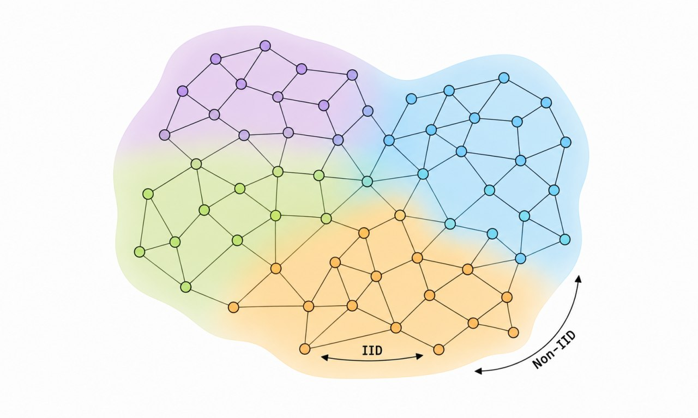

Reference scenario
Learning at the edge, where context matters
Nearby devices observe related phenomena, but the whole system remains spatially heterogeneous.

Nearby devices observe related phenomena, but the whole system remains spatially heterogeneous.
